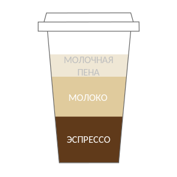

Капучино
Капучино– эспрессо со вспененным молоком. Название происходит от ит. слова “капуцин” – отсылка к характерному красно-коричневому цвету роб у монашеского ордена капуцинов. В отличие от латте, подается, как и эспрессо, в предварительно прогретой кофейной чашке на 150–180 мл. Если сравнивать латте и капучино – молока больше в латте, о нём дальше. Соотношение частей эспрессо, молока и пенки 1:1:1
